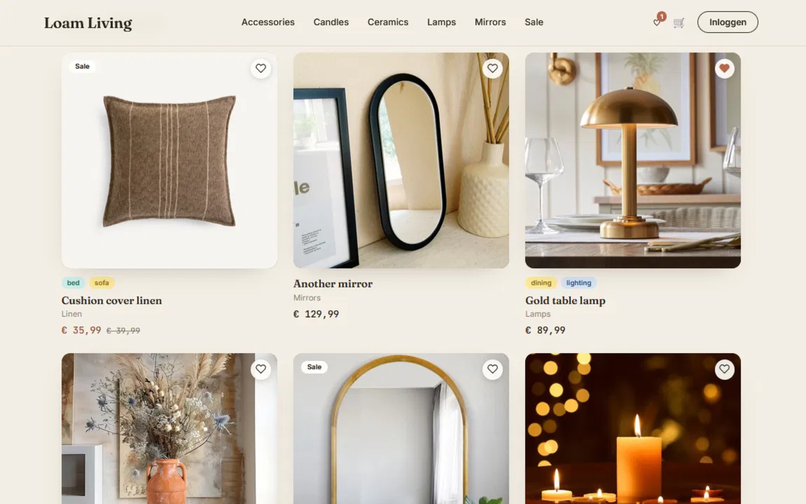

Loam Living
"Wonen, teruggebracht tot het wezenlijke." — a fictional Dutch-language home-decor shop built on Shopzo, selling handmade ceramics, linen, rattan and oak.

A demo built to show real webshop functionality.
Loam Living is a fictional storefront running on Shopzo, built specifically to demonstrate what a real webshop on the platform looks and feels like in practice — product browsing by category, a working cart and wishlist, and a full checkout flow. It's wrapped in a warm, editorial brand with copy written entirely in Dutch for a local audience.
What the concept actually shows.
Category-led catalogue
Products organised into Keramiek, Textiel and Hout & rotan — a clear, materials-first way to browse a small collection.
Dutch-first copy
Every line, from the hero to the footer, is written in Dutch for a local Belgian audience rather than translated from a template.
Trust strip built in
Free shipping over €60, small handmade runs, and a 30-day return window, surfaced directly under the collection.
Real Shopzo functionality
Wishlist, cart, checkout and login all run on the actual Shopzo infrastructure — this is a working webshop, not a static mockup.